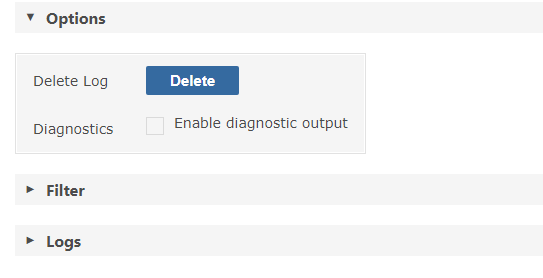
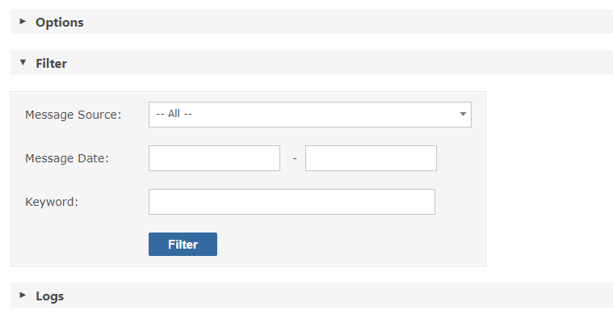

In addition to sending emails to the administrator email account, any system-level errors that are encountered are written to the System Log. All entries have a timestamp, verbose description of the error and, if the error was initiated from user action, the user associated with the error.
Gemini's System Log can be switched into diagnostic mode, in which case many timer applications as well as Rules and Actions will log their behaviour for added insight.

The System Log can be filtered to help you rapidly identify issues.
You can filter by Message Source, Date Range, and/or Keyword

Important The System Log can grow quite large so we recommend you purge it monthly or quarterly.
To clear down the System Log use the Delete button, or if your DBA will do it as part of a regular data tuning exercise, the table to truncate is gemini_systemlog